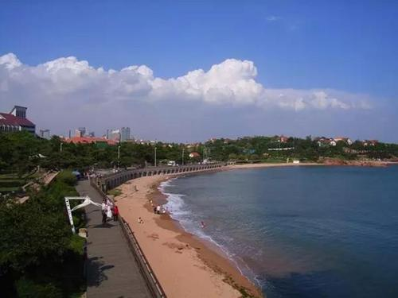
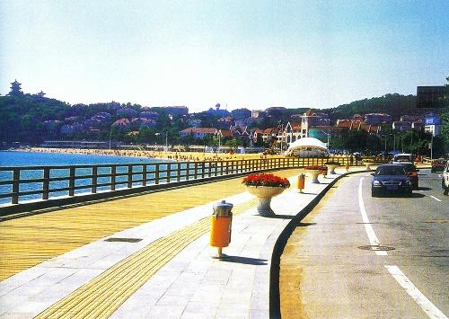
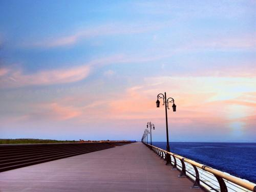
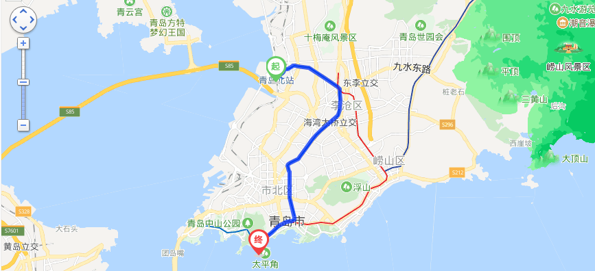

青岛滨海木栈道
时间：2019/11/11

【简介】 | ||
|---|---|---|
|  |  | |
|
在汇泉路附近的木栈道，采用了悬挑结构，既不设立柱，也不砌挡墙。该处的木栈道主体采用钢筋混凝土结构，道长210米、宽4米，路面首次选用芬兰露茜户外防腐木（滨海行道所选木材皆经过防腐烂、防白蚁、防真菌等处理），步行道外缘是l米多高的木质护栏。其在步行道上的运用，开创了岛城室外“木栈道”的先河。 |
青岛是一座美丽的海滨城市，众多的知名景点犹如一颗颗珍珠散落在青岛的前海海滨。滨海步行道就像一条美丽的彩带，将它们有机地串联在一起，形成一幅完整的风景画。滨海步行道的建设引入了国外先进的滨海步行道设计理念，同时通过规划建设使海滨风情毕显毕露，实现旅游资源再挖掘。 走在步行道上，欣赏岛城前海一线的旖旎风光，令人喜不自禁，流连忘返。 |
|
【地理环境】
木栈道赢得人们的喜欢，其中缘由大概有三：其一，设计的人性化，漫步时会发现，木栈道本着方便游人的原则，尽量不修建楼梯，而采用坡道的形式，绝大多数路段都用木板搭建而成，靠近大海一边全是一米多高的木栏杆，而不是硬邦邦的水泥和让人心冷的铁栏杆。 其二，打造的景点化，木栈道沿海顺势而建，斗折蛇行，曲径通幽，引人遐想，既与海岸景致和谐，自身又成为一道亮丽的风景线。 其三，使用价值高，木栈道是青岛市民一早、一晚锻炼的好去处，是节假日观光、散步的好地方，是外地游客来青岛赶海的必到之处，特别是旅游旺季，木栈道上常常人山人海。
【交通信息】
线路一：乘坐地铁三号线，约50分钟 线路二：步行至铁路北站东广场，约730米，然后乘坐325路快线(铁路北站东广场团岛)在铁路北站东广场上车,在科技街下车，然后步行至科技街(颐高数码广场) 40米，再乘坐604路环线(金门路)在科技街(颐高数码广场)上车，在一疗下车，最后步行至终点约382米